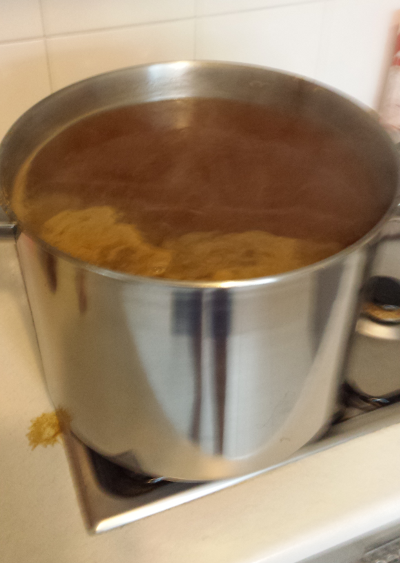

Benny Hallett
thoughts on software engineering
Amarillo Pale Ale
If you’re just starting out in Homebrewing, you may have bought yourself a homebrew kit from your local home brew store, or maybe a large chain store. My advice would be, don’t follow the instructions on the can of malt you get.
Ok maybe the first time you brew, use the can and follow the instructions. You’ve got the kit there, and it’ll be beer none the less.
However before you set off to do your second brew, read John Palmer’s amazing, free, online book, How To Brew. It started me on the track to actually crafting beers, rather than just re-creating a soulless, store-bought one.

This beer is the first beer I’ve ever brewed by boiling malt extract, and adding hops according to a schedule. I had an idea about the type of beer I wanted to make. I’m really loving bitter, heavily hopped pale ales at the moment, so I decided to try and create my own.
After looking for recipes online, I took my ideas to my local homebrew store, and with some recommendations from the brewer there, came up with the following recipe.
Recipe
Recipe Volume: 25L
Yeast: Safale - 05
Malts: 2x 1.5kg Morgan’s Pale Lager liquid malt extract
Calculated Original Gravity: 1.046
Hop additions:
- 50g Northern Brewer @ 60 min
- 30g Amarillo @ 30 min
- 15g Amarillo @ 15 min
- 15g Amarillo dry hop after 3 days
Calculated IBUs: Unknown
Procedure:
- Boiled 13 Litres of water, turned off heat and stirred in extract.
- Returned to boiling.
- Added 45g of Northern Brewer hops after the hot break.
- Boiled 30 minutes and added 30g of Amarillo hops.
- Boiled further 15 minutes and added 15g of Amarillo hops.
- Boiled further 15 minutes and turned off heat.
- Cooled pot in ice water bath to reduce temperature.
- Added wort to fermenter, and topped up with water to 15L.
- Pitched yeast.
Fermentation:
Fermenting at between 24 and 26 degrees celsius. Adding 15g of Amarillo hops after 3 days.
Results:
This beer was very nice. A couple of people I gave bottles to enjoyed it, and compared it to some store-bought beers. I’m not convinced it was as good as that, but it was a tasty beer.
The beer was quite bitter, and had a little amarillo aroma as you were drinking it. However it wasn’t the IPA style that I was going for. It was probably too bitter, and not aromatic enough.
Next time I brew this beer, I think I’ll be reducing the amount of bittering hops, and increasing the amount of hops later in the boil, along with 2 to 3 times the amount of dry hops.